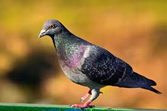

AboutUs
FollowUsOnYoutube
Intersting facts about chameleons:-
Chameleons are a very unique branch of the lizard group of reptiles.
There are around 160 species of chameleon.
Chameleons live in warm varied habitats from rainforests through to deserts.
Changing skin colour is an important part of communication among chameleon.
how to make a pigeon using craft paper!!

how to make a pigeon using craft paper!!
how to make a panda using craft paper!!

how to make a camel using craft paper!!
how to make a camel using craft paper!!